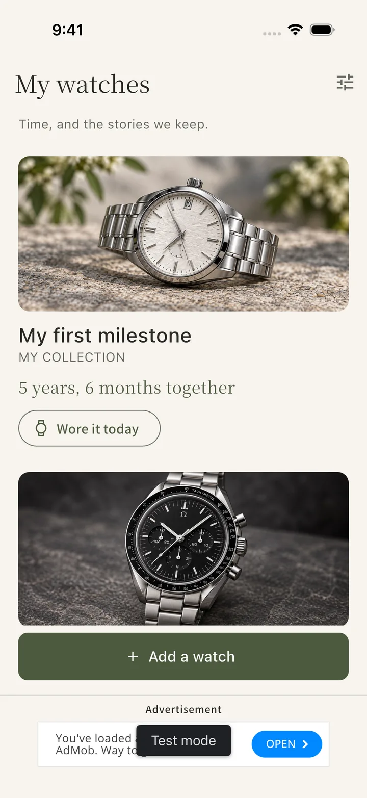
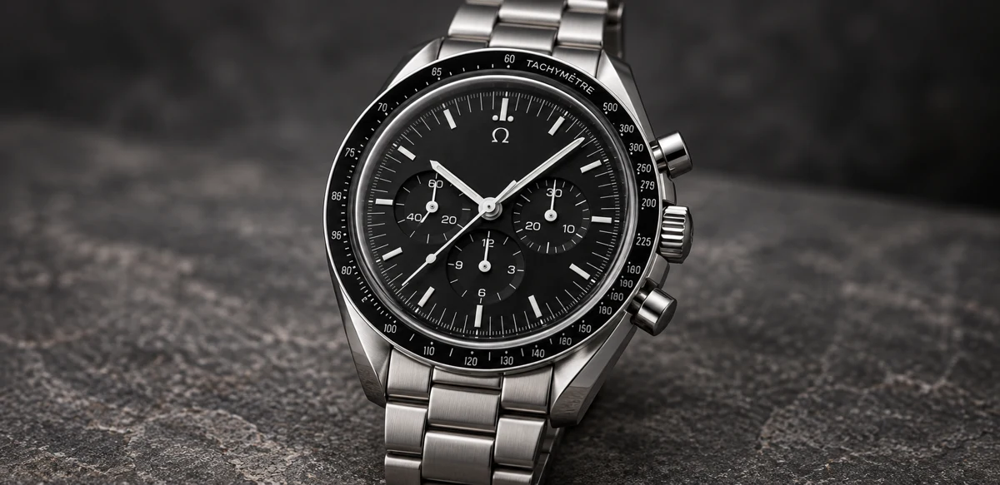
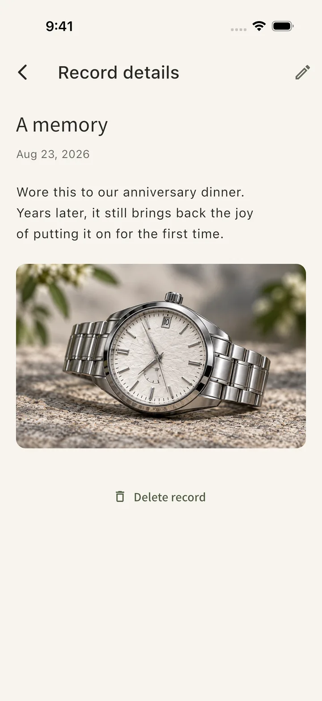
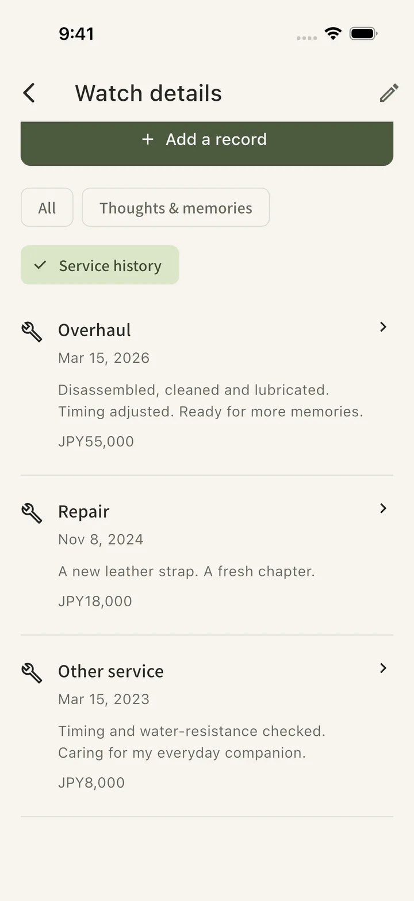

All features free and ad-supported / No account required
EVERY WATCH HAS A STORY.Keep yours close.

From days to devotion.A personal journal, starting with a photo.
A place for the watch that is yours.
01 Collection
02 Memories
03 Care & wear
MORE THAN A COLLECTION
There is more to remember than a watch's name.
The excitement of wearing it for the first time. The reason you chose it for an important day. The relief when it comes home from service. Time with a watch leaves a lot worth keeping.
Tokilea is a watch collection and journal app for saving photos, memories, service history and wear records together, one watch at a time.
MADE FOR YOUR TIMEPIECES
Care for the whole story.
Look back. Remember. Take care. Keep it all in one calm record.

MY COLLECTIONSee the watch you love, anytime.
01 / COLLECTION
Give every watch its own journal.
Enjoy your collection as a simple visual record. Keep the brand, reference, purchase shop and amount together for each watch. Time since you found it quietly becomes part of its story.
Start with a name. Add photos and details whenever you are ready.
02 / MEMORIES
Keep the feeling that came with it.
The watch you chose for a milestone. The feeling of reaching for it every morning. Save a photo and a few words with a date, so the story of your watch can grow over time.
Memories and service records come together in each watch's timeline.
A MOMENT TO KEEP

A photo and a few words can become a keepsake.

03 / CARE & WEAR
Remember what was done, when it matters.
Overhaul, repair or battery replacement. Record the work, provider and cost, with photos when useful. Set your next service date yourself and keep it close at hand.
✓
Log today's watch in one tap.
Tap “Wore it today” to record a wear. You can always see the last date you wore it.
Service dates are shown in the app. Tokilea does not send OS notifications.
YOUR OWN QUIET SPACE
Even looking back can feel like a ritual.
Warm ivory or restful dark. A considered space for your photos and records.
Switch the real app screen between modes.
LIGHT MODE
START WITH ONE WATCH
Begin with one.
You do not need to fill everything in. Add a little whenever you feel like it.
01
Name your watch
A name is all you need. A nickname or model name is fine. Add a photo to make it yours.
02
Keep today's feeling
Save the memory of finding it or a passing thought. One short note is enough to begin.
03
Let it grow with you
Add wear and service records as life happens. Looking back reveals the time you share.
QUESTIONS & ANSWERS
Frequently asked questions
What to know before you begin.
What is Tokilea?
Tokilea is a watch collection and journal app. Save photos, feelings and memories, service history and wear records for each watch. You can also see time since acquisition and your own next service date.
Is Tokilea free?
All features are free to use. Tokilea is ad-supported and has no in-app purchases, subscriptions or paid limit on the number of watches you can register.
Can I use it with just one watch?
Yes. Start with the one watch that matters to you. There are no brand or price requirements. Register it with a name first, then add photos and purchase details later if you wish.
What can I record about servicing and repairs?
Record the date, service type, work performed, provider, cost and currency, and photos. Set a future service date separately from completed history. The date is shown in the app; Tokilea does not send OS notifications.
Do I need an account? Where is my data stored?
No account is required. Watch records and imported photos are stored on your device. Tokilea has no cloud sync or in-app backup and restore. Advertising uses a network connection.
Which platforms and languages are supported?
The iOS product page is available through the App Store button on this page. Android release preparation is ongoing. Tokilea supports English and Japanese, with light and dark modes.